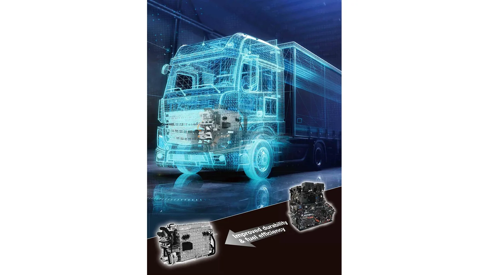

IVECO y Toyota anunciaron el 10 de septiembre de 2026 una colaboración dentro de EMPOWER, proyecto financiado por Horizon Europe. Toyota aportará el sistema de pila de combustible e IVECO se encargará del desarrollo, integración y validación del vehículo.
Para el S-eWay Fuel Cell, las empresas comunican 300 kW de potencia total de los sistemas de pila, más de 900 kilómetros de autonomía y una durabilidad superior a 25.000 horas. También anuncian una batería con la mitad de capacidad frente a la generación anterior. Son prestaciones comunicadas por los fabricantes, cuya aplicación operativa forma parte del programa de validación.
El cronograma prevé comenzar la validación en el cuarto trimestre de 2026 y las pruebas en carretera durante el primer semestre de 2027. El anuncio no fija una fecha de comercialización argentina. El paso de esta semana es el acuerdo de desarrollo y su plan de trabajo.
El antecedente de la tercera generación
Toyota había presentado su tercera generación de sistemas de pila de combustible en febrero de 2025, con especial atención a vehículos comerciales pesados. Por eso, conviene distinguir aquel desarrollo del anuncio actual: ahora se define una colaboración para integrarlo y comprobarlo en una aplicación de transporte.

Las cifras responden a preguntas diferentes
Análisis de Zabala Repuestos. Potencia, autonomía y durabilidad describen aspectos distintos. Una cifra de potencia del sistema de pila no debe trasladarse automáticamente a una especificación de tracción. Del mismo modo, una autonomía anunciada necesita condiciones de referencia para compararse con el recorrido de una flota.
Las horas de funcionamiento tampoco equivalen directamente a kilómetros. La relación depende de la tarea y del tiempo que el vehículo pasa en cada condición. Al seguir el proyecto, será útil observar qué información aportan las pruebas sobre carga, ruta y utilización.
Por qué importa probar con una operación definida
Una validación puede responder cuestiones que una presentación deja abiertas: cómo se organiza el abastecimiento, qué disponibilidad ofrece el conjunto y qué asistencia necesita. Para evaluar una tecnología conviene reunir esas respuestas dentro de la misma operación.
Una jornada aislada aporta experiencia, pero el trabajo repetido permite observar variaciones. El seguimiento debería conservar las interrupciones y sus causas, además de los viajes completados. Así se entiende qué parte del resultado corresponde al vehículo y cuál depende del entorno en el que trabaja.
La infraestructura es parte del proyecto
Para un lector argentino, la distancia anunciada puede resultar atractiva, aunque no resuelve por sí sola la planificación. Una eventual aplicación necesita identificar abastecimiento compatible, capacidad de atención y respaldo para continuar operando cuando cambia el itinerario.
También conviene conocer quién asume cada responsabilidad: provisión de energía, instalación, atención del vehículo y formación. La propuesta comercial resulta más clara cuando reúne esas piezas en lugar de dejar que el transportista deba resolverlas por separado después de incorporar una unidad.
Qué debería incluir una evaluación local
Antes de comparar alternativas, sería útil describir una misión concreta: carga habitual, distancia, frecuencia, horarios y base de mantenimiento. Esa misma información debería utilizarse en todas las propuestas para evitar conclusiones basadas en supuestos incompatibles.
Los costos necesitan el mismo orden. La evaluación debe explicar qué incluye cada valor, qué parte es una estimación y qué resultados provienen de pruebas. La disponibilidad de asistencia y componentes merece figurar junto al consumo, porque también condiciona la continuidad del servicio.
El conocimiento técnico acompañará a los vehículos
Para talleres y casas de repuestos, seguir estos proyectos ayuda a anticipar consultas y necesidades de formación. No implica asumir que una tecnología recién anunciada ya integra el parque local, sino conocer las preguntas que aparecerán si comienza su incorporación.
La identificación exacta seguirá siendo esencial: versión, sistema instalado y documentación del fabricante. La evolución tecnológica agrega información que debe acompañar al vehículo durante su mantenimiento y que no puede reemplazarse por una comparación visual entre piezas.
EMPOWER deja una agenda concreta para los próximos meses: integración, validación y pruebas. La noticia merece seguimiento por lo que puede aportar al transporte pesado; sus resultados permitirán evaluar con mayor precisión dónde encaja la propuesta y qué condiciones necesita para sostener una operación de larga distancia.